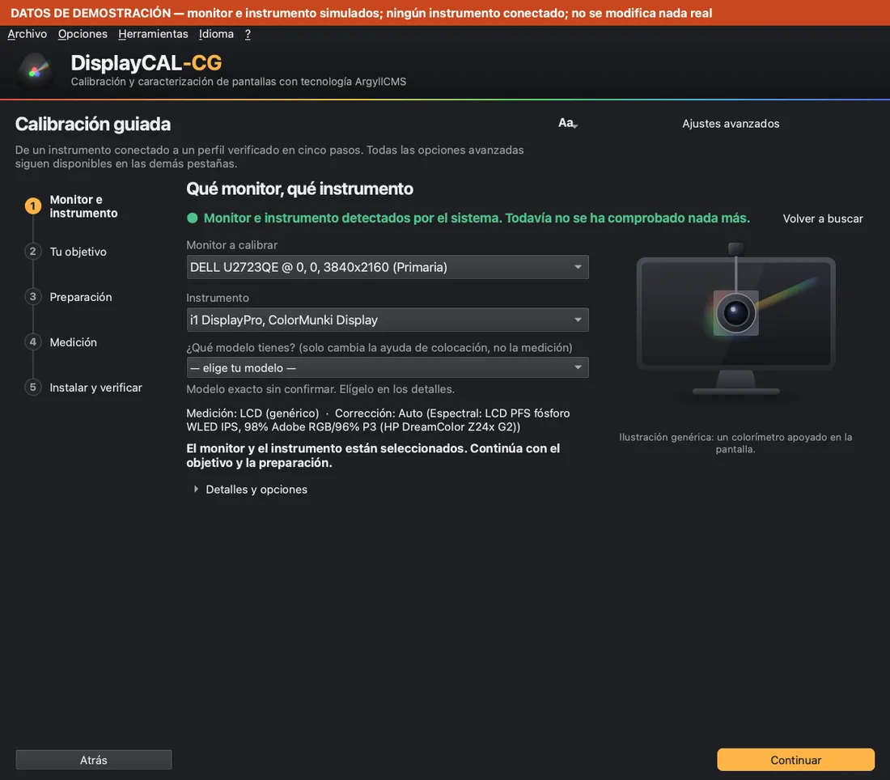
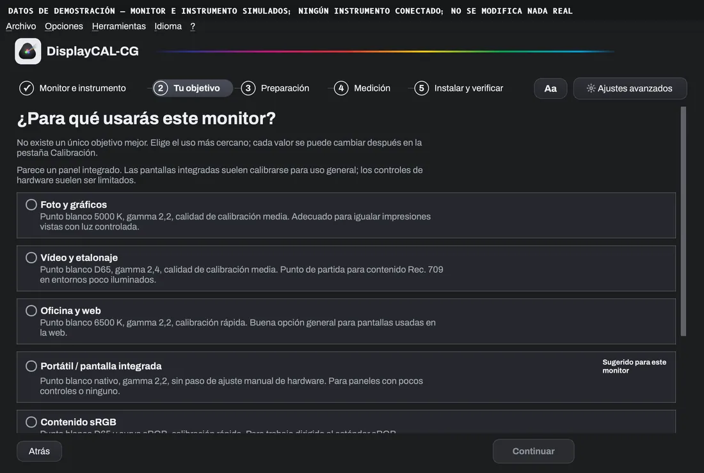
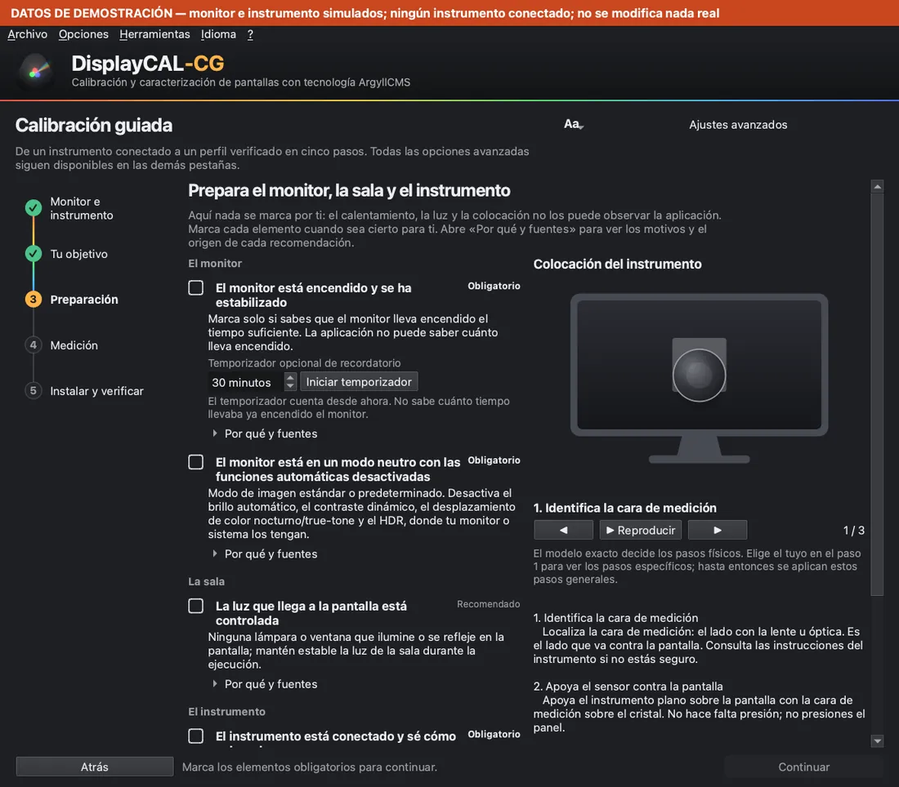
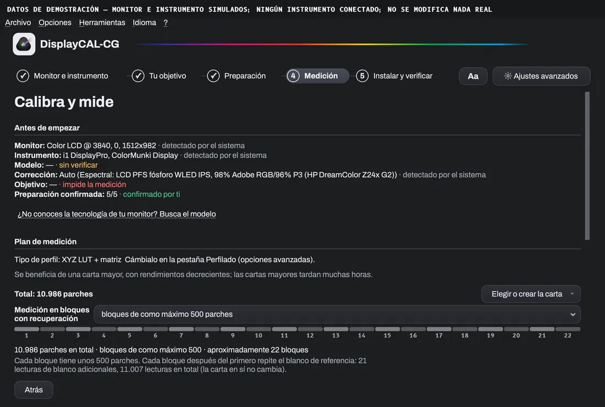
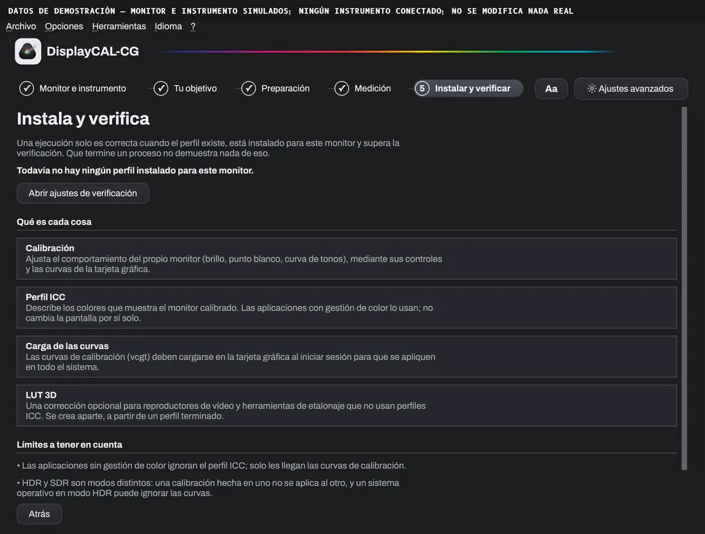
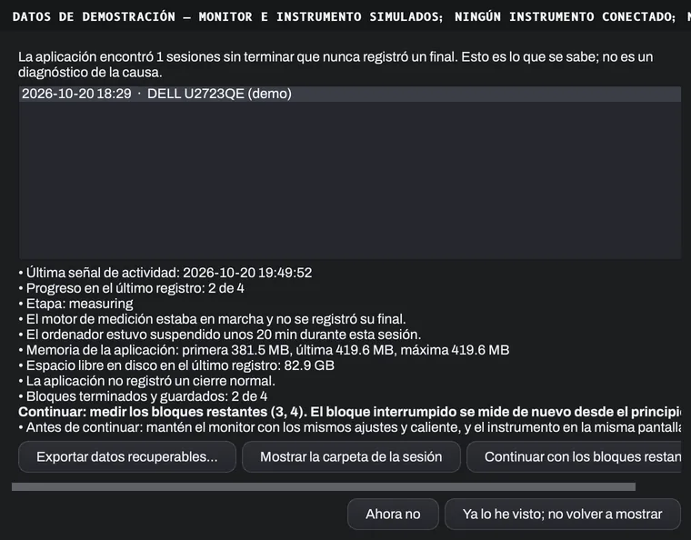
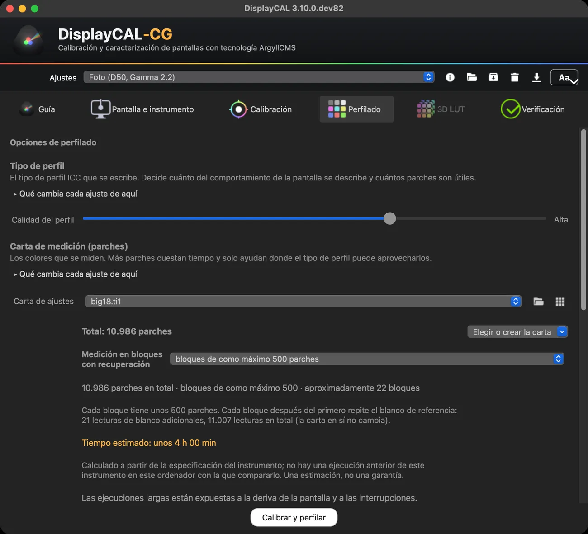
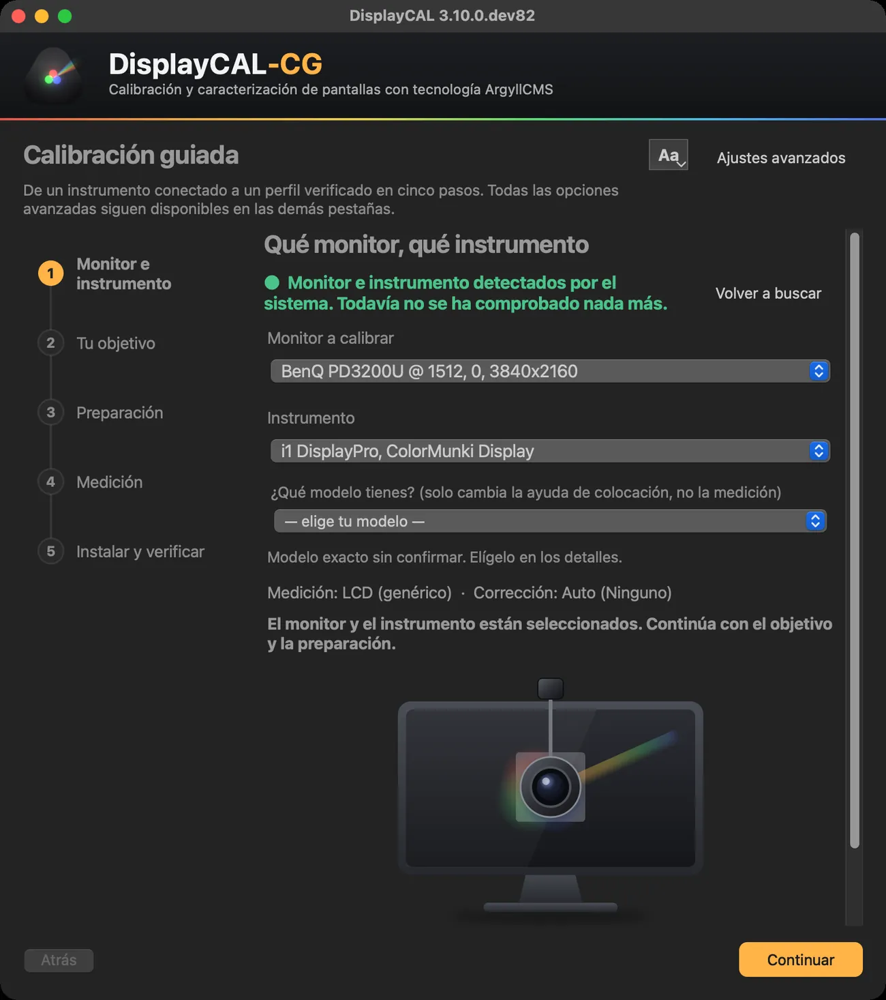
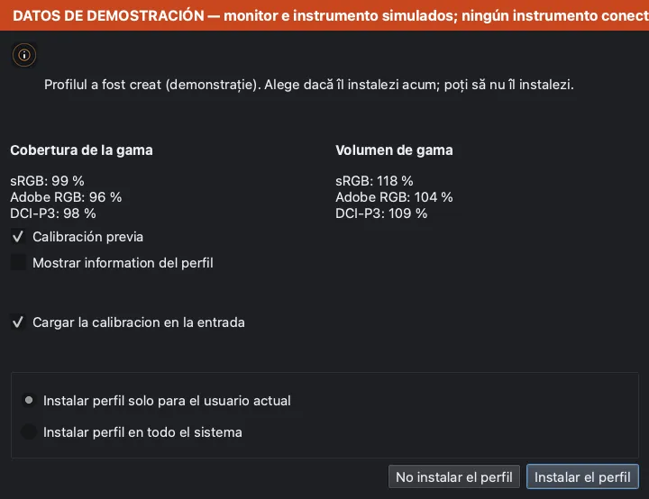

Calibración y perfilado de monitor
Un color en el que puedes confiar, paso a paso.
DisplayCAL-CG te lleva de la sonda a un perfil ICC verificado: qué preparar, cómo colocar el instrumento, cuánto tarda y qué pasa si algo se detiene. Sobre el motor ArgyllCMS, libre y abierto.
- 100% gratis
- GPLv3, sin prueba ni activación
- ArgyllCMS incluido y verificado
- RO · EN · ES
- macOS · Windows
Versión 3.10.0.dev82 (cg.4) · Apple Silicon para macOS, x64 para Windows

Qué hace y para quién es
La aplicación mide cómo muestra el color tu pantalla y escribe un perfil ICC que el sistema y tus programas usan para un color correcto. Es para fotógrafos, coloristas, diseñadores y cualquiera que necesite que el monitor se vea igual de un día a otro y de un programa a otro.
Qué necesitas
Un colorímetro o espectrofotómetro compatible con ArgyllCMS (por ejemplo de las familias i1Display, ColorMunki o Spyder). Sin un instrumento físico no se puede medir nada: la aplicación no simula mediciones.
El modelo exacto lo confirmas tú cuando varios productos comparten la misma identidad USB; la aplicación no adivina.
El flujo guiado, en cinco pasos
Cada paso dice qué se detectó y qué confirmaste tú, y bloquea la medición solo por motivos que explica. Todas las opciones avanzadas siguen en las otras pestañas.





Ves lo que detectó el sistema. Si el modelo no se puede deducir, lo eliges tú.
Foto, vídeo, oficina o «mantener mis ajustes actuales». Cada objetivo carga un preajuste que puedes cambiar después.
Una lista con fuentes: monitor estabilizado, modo neutro, luz de la sala, instrumento conectado, sin interferencias. Nada se marca solo.
El plan antes de empezar: tipo de perfil, número de parches, bloques, tiempo estimado, prevención de reposo.
El perfil se instala solo cuando existe uno válido; luego la aplicación lee el perfil activo y dice si es el que se acaba de crear.
DEMOCapturas de demostración: monitor e instrumento simulados, ninguna sonda conectada, ninguna medición real. La banda superior de cada imagen lo dice igualmente.
Preparación y colocación de la sonda
La mayoría de los errores de medición vienen de la preparación. La aplicación te acompaña, pero no puede observar la luz de la sala ni cuánto tiempo lleva encendido el monitor: eso lo confirmas tú.
- Monitor encendido y estabilizado (la recomendación de 30 minutos aparece solo en los instrumentos en que el fabricante la indica).
- Modo de imagen neutro, con brillo automático, contraste dinámico y filtros de color desactivados.
- Luz de la sala bajo control: sin lámpara ni ventana que ilumine o se refleje en la pantalla.
- Instrumento conectado directamente al ordenador, no a través de un hub.
- Una corrección adecuada al tipo de pantalla; la aplicación nunca la elige por ti.
Cómo colocar el instrumento
- Identifica la cara de mediciónEl lado con la lente u óptica es el que se apoya en la pantalla. Revisa las instrucciones de tu instrumento si dudas.
- Apóyalo en la pantallaApoya el sensor plano en la pantalla, con la cara de medición sobre el cristal. No presiones el panel.
- Céntralo en la zona de mediciónCéntralo en el cuadrado de medición que muestra la aplicación y mantenlo quieto durante toda la ejecución.
Esquema genérico, no una foto de producto. Estos pasos generales no sustituyen el documento del fabricante de tu instrumento.
Calibración, perfil ICC, verificación, LUT 3D
Cuatro cosas distintas, en este orden natural; la LUT 3D es opcional:
- 1
Calibración
Lleva el monitor a un objetivo (punto blanco, luminancia, curva de tonos) con sus propios controles y las curvas de la tarjeta gráfica. Produce curvas de calibración, no un perfil.
- 2
Perfilado ICC
Mide cómo muestra el color la pantalla calibrada y escribe el perfil ICC. El tipo de perfil es la forma en que se describen las mediciones a las aplicaciones.
- 3
Verificación
Mide de nuevo y compara con lo que predice el perfil. Muestra una desviación, no una garantía: los límites se explican en la guía.
- 4
LUT 3D
Una tabla que usa solo la aplicación o dispositivo que la carga (por ejemplo una herramienta de etalonaje o de reproducción), independiente de cómo otros programas leen el perfil ICC.
El plan de medición, antes de empezar
Tres números separados, para que no se confundan: el total de parches de la carta, el bloque más grande y el número de bloques. El tamaño del bloque nunca cambia el total; solo decide cómo se corta la misma carta.
- Total
- Cuántos parches tiene la carta elegida o creada. La aplicación no fija un límite; se crearon y dividieron en bloques, en pruebas, cartas de más de 10.000 parches.
- Bloques
- Una ejecución larga puede cortarse en bloques que se guardan en disco al terminar. Cada bloque después del primero repite el blanco de referencia; las lecturas adicionales se muestran aparte.
- Tiempo estimado
- Según la velocidad medida en este ordenador, si hay historial, y si no según la especificación del instrumento, y la aplicación dice cuál. Una estimación, no una garantía.
- Más parches no es automáticamente mejor
- Ayuda donde el tipo de perfil puede aprovecharlos (sobre todo los LUT), cuesta tiempo y deja que la pantalla derive. Verifica el resultado tras perfilar.
Si una ejecución se detiene
La aplicación lleva un diario de la sesión. En el siguiente inicio muestra lo que se conservó y ofrece exportar, abrir la carpeta o continuar con los bloques restantes, solo si el monitor, el instrumento, el modo, la corrección y el tipo de perfil son los mismos. Una ejecución medida de una pieza no puede recuperarse si se interrumpe: por eso se recomiendan los bloques en ejecuciones largas.


Modo avanzado, la misma configuración
Todos los controles siguen en las pestañas, agrupados por la decisión que tomas (tipo de perfil, carta, comportamiento de la medición…), con «Qué cambia cada ajuste de aquí» en cada grupo. El modo guiado y el avanzado comparten una configuración: lo que cambias en uno se ve en el otro.
Texto más grande y legible
El botón «Aa» cambia al instante el tamaño del texto en toda la aplicación (Normal, Grande, Muy grande), partiendo del tamaño de tu sistema. No toca la ventana de medición, el tamaño de los parches ni los colores.
En ambas plataformas


Sin instrumento conectado, la aplicación dice claramente «No se detectó ningún instrumento» y bloquea la medición; no inventa datos.

Qué hemos verificado y qué no
Estado en la versión 3.10.0.dev82 (cg.4). Lo que no está en la columna verificada no se promete.
Verificado
- Los instaladores de macOS (.pkg y .dmg) están firmados con Developer ID, notarizados y comprobados con spctl; la aplicación arranca.
- Instalación limpia en Windows 11 (VM Parallels, ARM64 con emulación x64): instalación, arranque, ArgyllCMS incluido, exportación de diagnóstico.
- Una medición real corta (38 parches) con un colorímetro i1Display en un monitor externo, en macOS: repetibilidad, división en bloques, parada y reanudación, cancelación.
- Exportación de diagnóstico local, sin envío automático, en macOS y Windows.
No verificado
- Las sesiones de varias horas (por ejemplo 4–8 horas) todavía no se han validado. Medir en bloques guarda localmente los bloques terminados, pero no garantiza estabilidad, precisión ni recuperación en cualquier condición.
- La desconexión de la sonda durante una medición, y la recuperación tras un corte de corriente o tras la suspensión, no se han verificado con un instrumento real.
- Los instrumentos distintos del probado dependen del soporte de ArgyllCMS; no los hemos verificado nosotros.
- Windows en hardware x64 nativo y macOS en procesadores Intel: no verificado (el paquete de macOS es para Apple Silicon).
- El instalador de Windows aún no está firmado con un certificado de pago: SmartScreen puede avisar. Descárgalo solo de las páginas oficiales.
- Las traducciones al rumano y al español no han sido revisadas por hablantes nativos.
Gratis y de código abierto
DisplayCAL-CG es 100% gratis: sin prueba, sin activación, sin funciones de pago. Es una edición mantenida por Cristi Gordaș, sobre el mismo código y la misma licencia GPLv3 que el proyecto original. La aplicación puede mostrar el mensaje opcional de apoyo del proyecto original; puedes cerrarlo y marcar «No volver a mostrar».
Créditos
- DisplayCAL — Florian Höch, el autor original.
- displaycal-py3 — la continuación de la comunidad (el port a Python 3).
- ArgyllCMS — Graeme Gill, el motor de medición y de perfiles.
- DisplayCAL-CG — adaptaciones, interfaz guiada e instaladores: Cristi Gordaș.
Código, documentación, incidencias, contribuciones
- Código fuente
- Versiones y descargas
- Informar de un problema
- Documentación del proyecto original
- Qué viene del proyecto original
- La guía completa (PDF)
Si te ha sido útil, una estrella en GitHub ayuda a que el proyecto se encuentre.

Instalar, actualizar, desinstalar
macOS: abre el .dmg o el .pkg, acepta la licencia e instala; la aplicación y sus herramientas quedan en Aplicaciones.
Windows: ejecuta DisplayCAL-CG-Setup.exe, acepta la licencia y sigue los pasos. Si aparece SmartScreen: Más información → Ejecutar de todas formas, solo para el archivo descargado de las páginas oficiales.
El instalador incluye ArgyllCMS, verificado con una suma SHA-256 fija; si alguna vez hiciera falta una descarga, un archivo que no coincide se rechaza.
Actualizar: «Buscar actualizaciones» en la aplicación; con tu consentimiento descarga e instala la nueva versión (macOS pide la contraseña de administrador en la ventana del sistema).
Desinstalar: en Windows desde Configuración → Aplicaciones; en macOS mueve la aplicación y sus herramientas de Aplicaciones a la Papelera. Los datos permanecen en las carpetas de la aplicación (preferencias, registros, sesiones) hasta que los borres.
Diagnóstico y soporte
La aplicación guarda registros rotativos en local y puede crear un paquete de diagnóstico, redactado por defecto, en el lugar que elijas. No envía nada automáticamente: tú decides si lo adjuntas a un problema que informes.